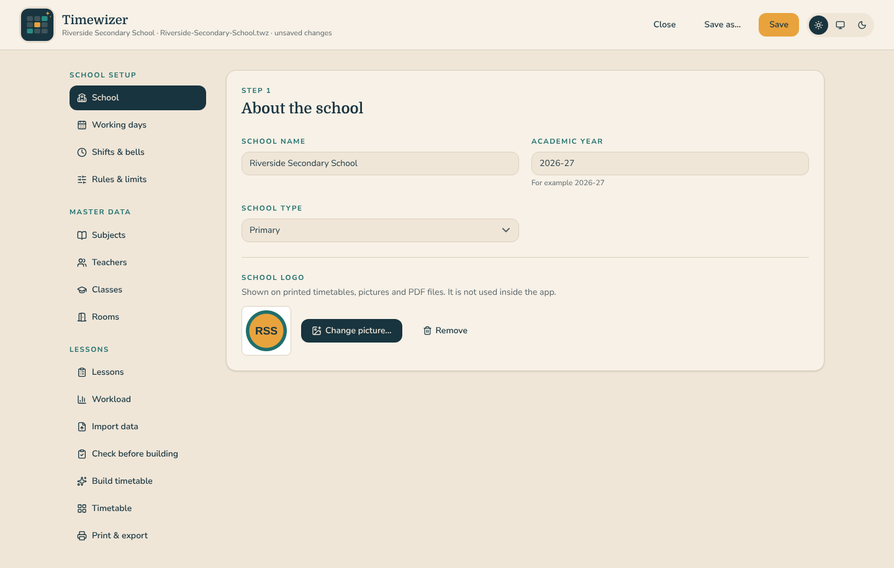
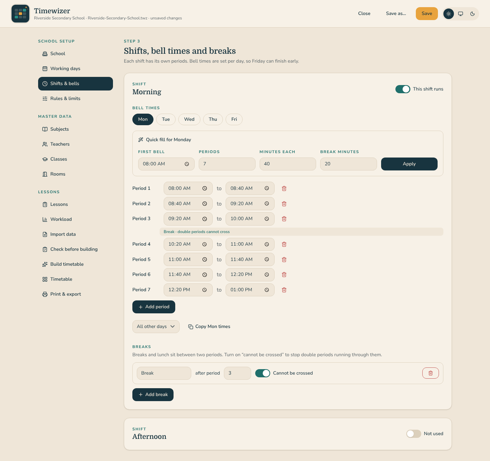
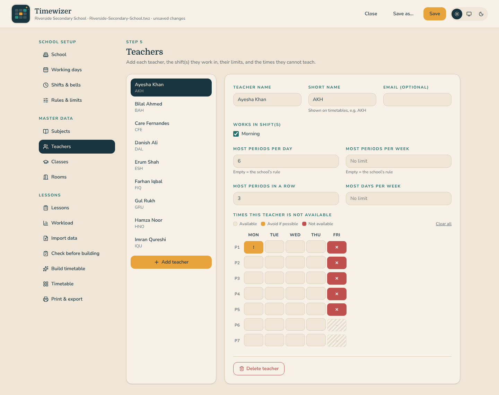
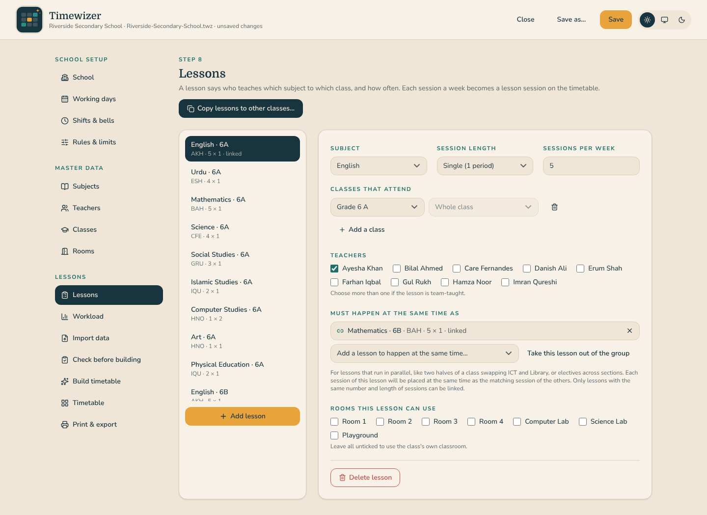
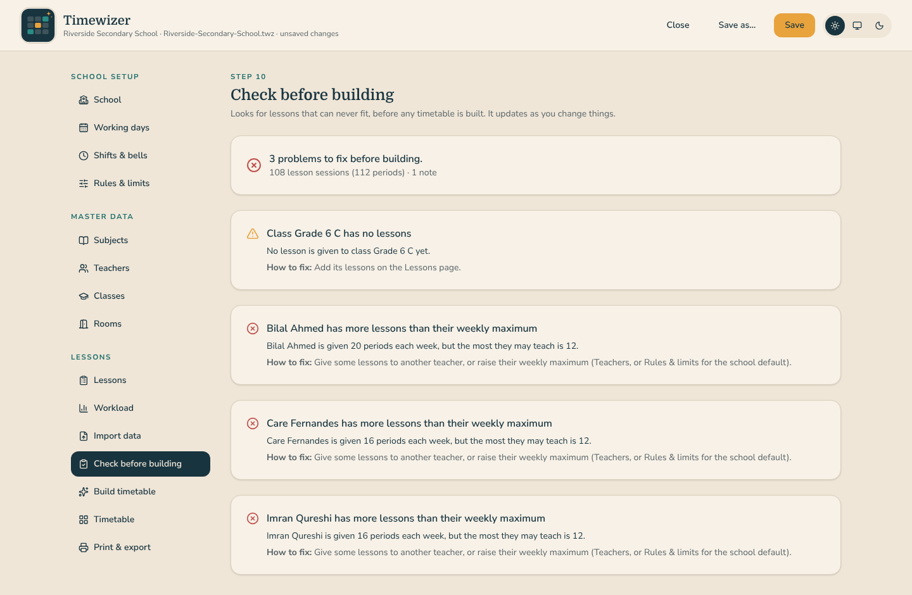
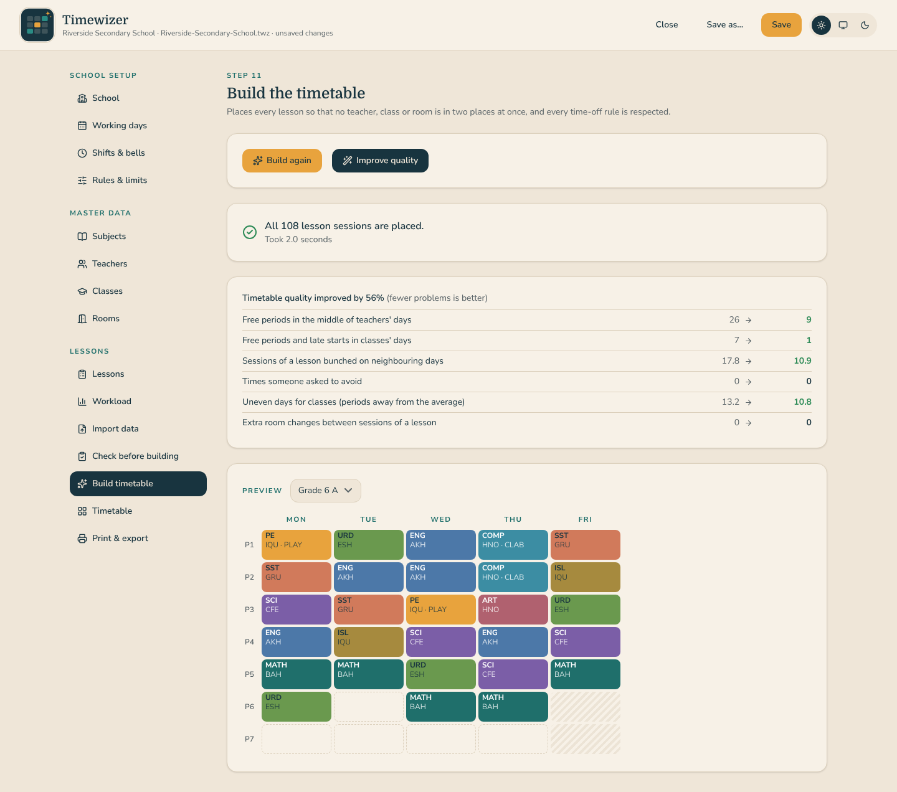
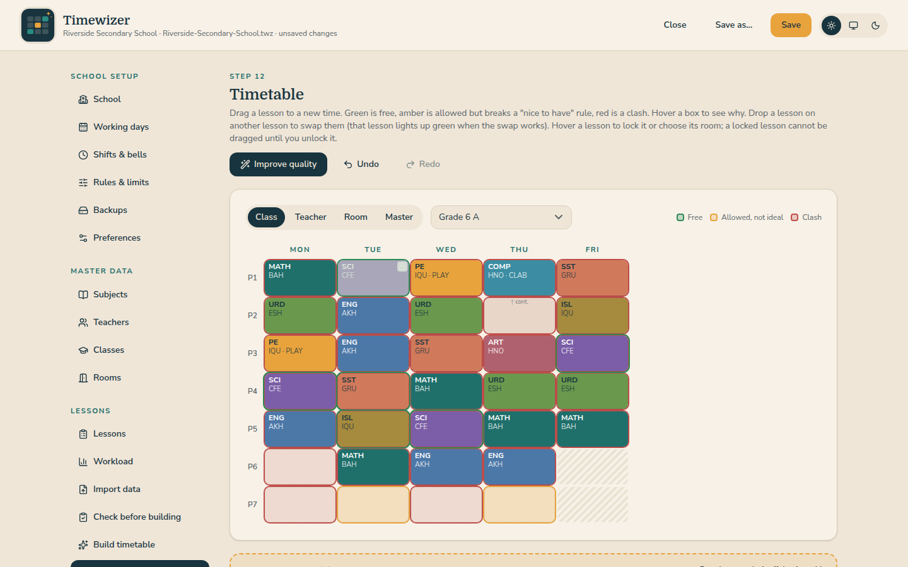
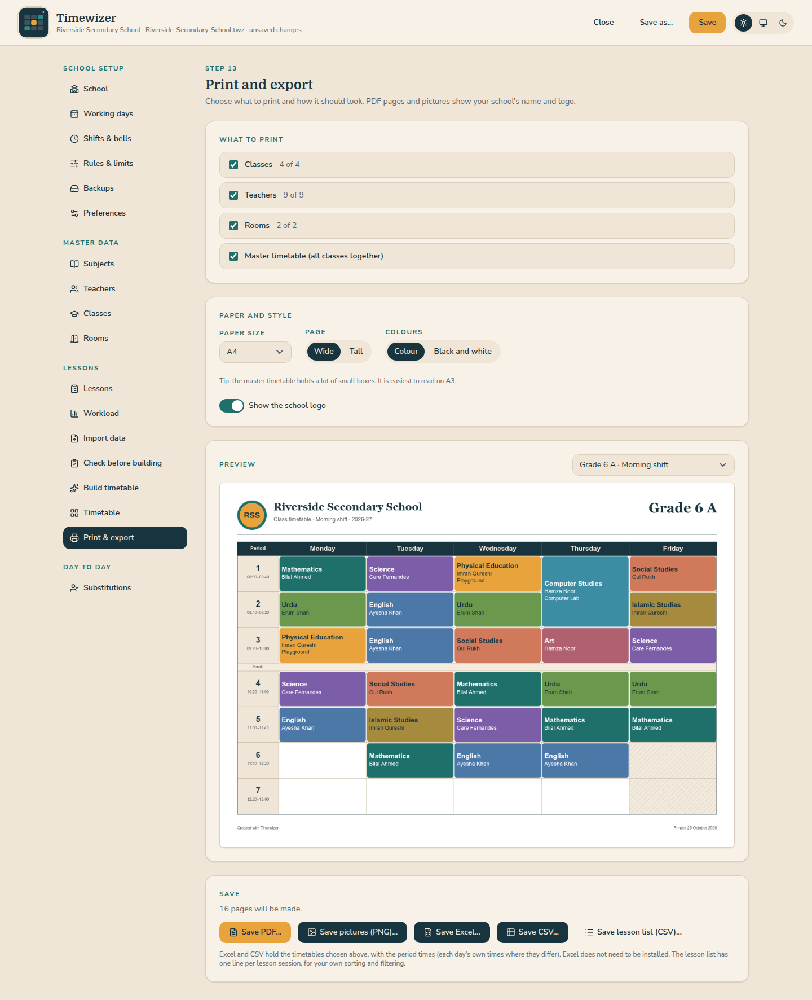

A short guide to making your school timetable.
Timewizer works on your own computer and needs no internet. Each school is one file that you can save, copy and open again, like a document.
Double-click the setup .exe file and follow the steps. Then open Timewizer from the Start menu. If Windows shows "Windows protected your PC", press More info, then Run anyway (the installer is not signed yet). School IT staff can use the .msi file instead. Double-clicking a saved school file (.twz) opens it in Timewizer.
On Ubuntu, double-click the .deb file and press Install (or run sudo apt install ./Timewizer_0.1.2_amd64.deb in a terminal). Then open Timewizer from the applications menu.
You can also use the AppImage file instead: right-click it, choose Properties, allow it to run as a program, then double-click it. Nothing is installed.
The steps are in the list on the left, from top to bottom. Press Save (or Ctrl+S) often. Save as… makes a copy, which is a good way to keep a backup.

Working days: switch on the days your school runs lessons (Saturday is optional).
Shifts & bells: a school can have a morning shift, an afternoon shift, or both. Each shift has its own periods. Bell times are set for each day, so Friday can finish early. Use Quick fill to make a day's periods in one go, then Copy Mon times to the other days.

School-wide rules, kept every time a timetable is built:
Add each of these under Master data. Pick one in the list, then fill in its details.
Click a box to cycle: available, avoid if possible, not available. Click a day's name to block the whole day. Striped boxes are periods that do not exist that day.

A lesson says who teaches which subject to which class, how many sessions a week, and how long each is (single, double or triple period). The words used everywhere in Timewizer:
| Word | Meaning |
|---|---|
| Lesson | One row in the Lessons list, for example "English · 6A". |
| Lesson session | One occurrence of a lesson in the week. A double period is one session. |
| Period | One time slot. A double period is two periods. |

Some lessons must happen together, for example two halves of a class swapping ICT and Library, or electives across sections. In the lesson, use Must happen at the same time as. Session 1 of each linked lesson is placed together, with its own room.
Press Copy lessons to other classes…, choose the class to copy from and the classes to copy to. A preview shows what will be added, and nothing changes until you press the button at the bottom. Then change the teachers if they differ.
Workload shows each class and teacher: periods used compared with periods available.
This finds lessons that can never fit, before anything is built: a teacher with too many periods, a lesson whose teacher and class are never free together, a room that is not big enough for the demand. Each problem has a plain explanation and How to fix.

Press Build timetable. A bar shows progress and you can press Stop. First all lesson sessions are placed, then the timetable is improved using the wishes from Rules & limits. The result shows how many sessions were placed, and how much better the timetable became.

If some sessions cannot be placed, each one is listed with the reason and a suggestion. If you switched on bending a few rules, the page lists every rule that was bent.
Open Timetable. Choose Class, Teacher, Room or Master (all classes together; use the zoom to make it bigger).

Open Print & export. Choose what to print (classes, teachers, rooms, the master timetable, or just some names), the paper (A4, A3 or Letter, wide or tall), colour or black and white, and whether to show the school logo. A preview shows the page.

| Button | What you get |
|---|---|
| Save PDF | One file, one page for each timetable, with your school's name and logo. Best for printing. |
| Save pictures (PNG) | One picture for each timetable, in a folder you choose. Good for WhatsApp or e-mail. |
| Save Excel | A workbook with the master timetable, and sheets for classes, teachers and rooms, plus a list of every lesson session. |
| Save CSV | A plain list with one line for each lesson session, for other programs. |
| What you see | What to do |
|---|---|
| "Please fix the problems on the Check page first" | Open Check before building. Each problem says how to fix it. |
| Some lesson sessions "could not be fitted in" | Read the reason under each one. Usually a teacher or class has too little free time. Free up time, or switch on bending a few rules in Rules & limits. |
| A red box when you drag | Hover it. It names the teacher, class or room that is in the way. |
| Import says a row could not be imported | The message gives the file, the row and the reason. Fix that row and import again. |
| Names print as "?" in the PDF | The PDF supports Western letters only. Pictures (PNG) and Excel work with any letters. |
Timewizer is open source (Apache-2.0).